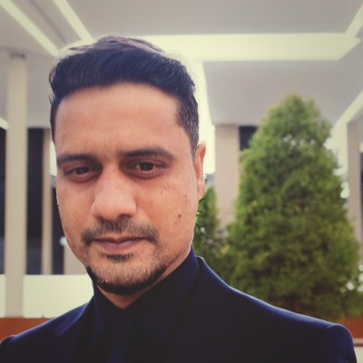

PROJECT COORDINATOR / PCO — PMP · CSM
I keep regulated, multi-million-dollar programs on schedule, on budget, and audit-ready.
4+ years keeping regulated programs honest — governance, cost control and executive reporting at S&P Global, MSCI and BNY Mellon. My job is to see the whole picture: not just what has been spent, but the committed dollars a surface report misses — and to give leadership the truth early, while there is still time to act.
A live cost-control project below — Next →, chapter tabs, or arrow keys to explore.
Chapter 01 · Track Record
Nine years in project delivery and financial operations — the last four running governance, cost and reporting on regulated BFSI programs at three global institutions.
C2 Prep — Brampton, Canada · Oct 2025 – Jan 2026
Owned delivery coordination and documentation governance across concurrent client engagements.
S&P Global — Hyderabad, India · Mar 2022 – Dec 2022
PCO on a ~$3.2M program spanning 10+ concurrent workstreams, reporting into steering.
SG Analytics (MSCI) — Mumbai, India · Jan 2018 – Feb 2022
Reporting and compliance operations for a global index & analytics provider.
BNY Mellon — Pune, India · Dec 2016 – Nov 2017
Fund accounting and portfolio reporting for institutional asset-management clients.
Chapter 02 · Project One
screenshots/prj-01-1.jpgscreenshots/prj-01-2.jpgscreenshots/prj-01-3.jpgscreenshots/prj-01-4.jpgChapters 03–04 · What’s next
Project One is built end to end. Two more are in active development — each targeting a specific, in-demand PCO capability, built to the same bank-grade standard you just saw.
A PMO running a portfolio of projects in Dynamics 365 Project Operations — capacity planning, resource allocation and utilization reporting, with a Power BI analytics layer and a Power Automate status-collection flow.
Why it matters: hands-on D365 Project Operations plus resource management is the single most-requested skill in current PCO / PMO analyst postings.
A client-side PCO on an ERP implementation across the full delivery lifecycle — design sign-offs, three data-migration reconciliations (vendor master, open AP, GL opening balances), a UAT & defect tracker, cutover runbook and hypercare.
Why it matters: proves I can run the messy, real work of an ERP go-live — the reconciliations and sign-offs that decide whether a cutover succeeds.
Both are being built with real tooling and hands-on evidence — the same way Project One was. Check back, or ask me for a walkthrough of where they stand.
Chapter 04 · Capability
Governance and cost-control fundamentals, the delivery toolchain a bank actually runs on, and the credentials to back them.
Education
Chapter 05 · Let’s talk
You just paged through a project I ran end to end — schedule, cost, governance and reporting, in the tools your PMO already uses. I can do the same for yours.
Project Coordinator / PCO / PMO roles across BFSI, ERP and analytics. I bring governance that holds up under audit — and status reports leadership can trust without re-checking.